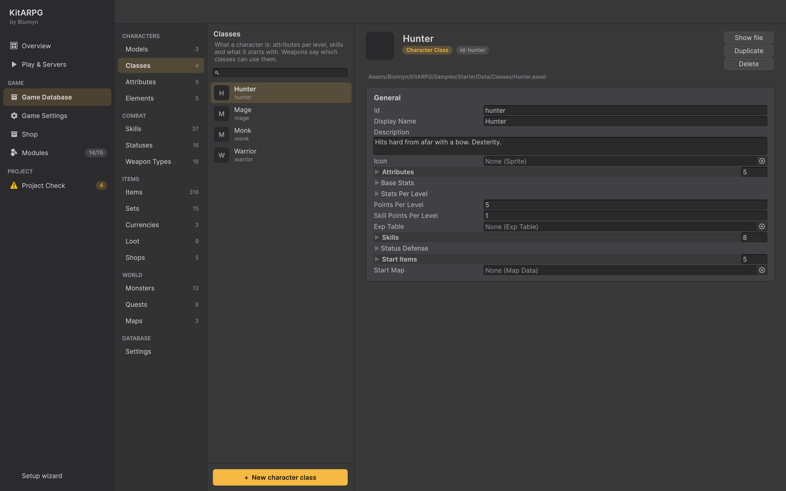

Classes
Uma classe é o que um personagem é: os atributos e stats que ele recebe em cada nível, as habilidades que pode aprender, os estados que ignora, os itens com que começa e o mapa onde começa. Esta página cobre cada campo de uma classe, a tabela de experiência e como criar uma classe nova passo a passo.
O que é uma classe
Todo personagem tem exatamente uma classe, escolhida na tela de criação de personagem e salva com o personagem como o id da classe. A classe decide:
- Os pontos de atributo que o personagem recebe de graça em cada nível, antes de o jogador gastar qualquer um.
- Os stats base no nível 1 e o que cada nível seguinte adiciona.
- Quantos pontos de atributo e pontos de habilidade o jogador ganha por nível.
- Quais habilidades o personagem pode aprender com pontos de habilidade, a partir de qual nível e até qual grau.
- A quais estados ele é imune ou resistente.
- Os itens com que um personagem novo começa, vestidos ou na bolsa.
- O mapa onde um personagem novo aparece.
Uma classe não lista armas nem armaduras. Cada arma e peça de equipamento diz quais classes podem usá-la (veja Equipamento), então adicionar uma arma nova nunca exige editar suas classes.
Quais classes um jogador pode escolher depende da aparência que ele escolhe: cada modelo de jogador lista as classes que pode ter. A amostra tem quatro classes: Warrior, Hunter e Mage, que os corpos masculino e feminino podem ter, e Monk, que só o corpo de panda pode ter.
Onde ficam as classes no editor

Abra a janela KitARPG (KitARPG > Open KitARPG, Ctrl/Cmd+Shift+K) e vá para Game Database. As classes ficam no grupo Characters, em Classes. A lista mostra cada classe com seu ícone, nome e id; o painel à direita mostra a classe selecionada.
Você também pode criar um asset de classe pela janela Project com Create > KitARPG > Character Class. Uma classe criada assim só conta quando o game database consegue alcançá-la: liste-a em Classes ou adicione-a a um modelo de jogador (o banco de dados reúne sozinho as classes dos modelos).
A forma mais rápida de ter uma classe nova que joga bem é duplicar uma existente. Selecione a classe no Game Database e pressione Duplicate, ou use + New class com copy of no assistente de novo modelo de jogador.
Campos
Toda classe também tem os quatro campos que todo asset de dados do jogo tem.
| Campo | O que faz | Padrão |
|---|---|---|
Id (id) |
Salvo com os personagens e enviado nas mensagens de rede. Preenchido a partir do nome do arquivo quando o asset é criado (Fire Bolt vira fire_bolt) e nunca muda depois, então renomear o arquivo é seguro. Mudá-lo à mão quebra todos os personagens salvos desta classe. |
Do nome do arquivo |
Display Name (displayName) |
O nome que os jogadores veem. Vazio usa o nome do arquivo. | Vazio |
Description (description) |
Mostrada na tela de criação de personagem e nos tooltips. | Vazio |
Icon (icon) |
Mostrado nas listas, na tela de criação e no Game Database. | Nenhum |
Atributos
| Campo | O que faz | Padrão |
|---|---|---|
Attributes (attributes) |
Uma lista de pares de atributo e quantidade. Cada entrada dá ao personagem pontos naquele atributo em cada nível, antes dos pontos que o jogador gasta. | Vazio |
Attribute (attribute) |
O atributo que a entrada aumenta. | Nenhum |
Amount (amount) |
Um valor por nível: Base Value (baseValue) é a quantidade no nível 1 e Per Level (perLevel) é somado para cada nível depois do primeiro. O resultado é arredondado para um número inteiro de pontos. |
0, 0 |
Um valor por nível funciona sempre do mesmo jeito em todo o kit: valor no nível L = baseValue + perLevel × (L − 1).
Por exemplo, o Warrior da amostra tem Strength 8 de base e 2 por nível. No nível 10 isso dá 8 + 2 × 9 = 26 pontos de Strength só da classe. Agility 4 de base e 1 por nível dá 13 no nível 10. Intelligence 2 de base e 0.5 por nível dá 6,5, arredondado para 7.
Stats
| Campo | O que faz | Padrão |
|---|---|---|
Base Stats (baseStats) |
Os stats da classe no nível 1, antes de atributos, equipamento e buffs. Todo stat pode ser definido aqui. | Max Health 80, Max Mana 30, Move Speed 3,5, Crit Damage 0,5 (50 %), todo o resto 0 |
Stats Per Level (statsPerLevel) |
Somado aos stats base para cada nível depois do primeiro. | Max Health 12, Max Mana 4, todo o resto 0 |
Os stats base são o único lugar onde um stat pode ter decimais: uma velocidade de caminhada de 3.7 metros por segundo é válida. Todo bônus de atributos, equipamento, conjuntos, gemas e estados conta em números inteiros e porcentagens inteiras (veja números inteiros).
Os stats em porcentagem são escritos como frações nos stats base: critChance = 0.05 é 5 %, critDamage = 0.5 é +50 % de dano em um acerto crítico.
Pontos por nível
| Campo | O que faz | Padrão |
|---|---|---|
Points Per Level (pointsPerLevel) |
Pontos de atributo que o jogador ganha para cada nível depois do primeiro, para gastar na janela Character (C). |
5 |
Skill Points Per Level (skillPointsPerLevel) |
Pontos de habilidade que o jogador ganha para cada nível depois do primeiro, para gastar na janela Skills (K). As habilidades que esta classe desbloqueia no nível 1 já começam aprendidas no grau 1 sem gastar pontos. |
1 |
Exp Table (expTable) |
A experiência necessária para cada nível. Vazio usa a tabela do game database. | Nenhum |
Os pontos nunca são guardados como um total livre. O servidor calcula os pontos de atributo livres como ganhos menos gastos, e os pontos de habilidade livres como ganhos (mais os pontos bônus de pergaminhos) menos gastos, toda vez. Então, se você mudar Points Per Level depois, os personagens existentes recebem o novo valor no próximo login.
Habilidades
| Campo | O que faz | Padrão |
|---|---|---|
Skills (skills) |
As habilidades que esta classe pode aprender com pontos de habilidade. | Vazio |
Skill (skill) |
A habilidade. | Nenhum |
Unlock Level (unlockLevel) |
Nível do personagem necessário para o grau 1. Os graus seguintes pedem mais níveis: o grau n pede unlockLevel + (n − 1) × levelsPerRank, onde Levels Per Rank é definido na habilidade. |
0 |
Max Level (maxLevel) |
Grau máximo até o qual esta classe pode subir a habilidade. 0 usa o Max Level da própria habilidade. Um valor acima do máximo da habilidade é limitado a ele. |
0 |
As habilidades com nível de desbloqueio 1 (ou 0) começam aprendidas no grau 1 para personagens novos, sem gastar ponto.
Exemplo: o Warrior da amostra tem Cleave no 1, War Cry no 3, Ground Slam no 5, Unbreakable no 6, Shield Wall no 7, Charge no 9 e Leap Strike no 11. Cleave tem Levels Per Rank 2, então o grau 3 de Cleave pede o nível 1 + 2 × 2 = 5.
Os personagens também podem aprender habilidades que não são da classe, com livros, pergaminhos e NPCs treinadores. Isso é definido na própria habilidade; veja Aprender fora da classe.
Defesa contra estados
| Campo | O que faz | Padrão |
|---|---|---|
Status Defense (statusDefense) |
Estados aos quais a classe é imune ou que duram menos nela. É o mesmo bloco dos monstros e dos estados. Veja Imunidades e resistências. | Vazio |
Isso só barra os estados nocivos que os inimigos colocam no personagem. Os buffs do próprio personagem ou dos aliados sempre pegam.
Itens iniciais e mapa inicial
| Campo | O que faz | Padrão |
|---|---|---|
Start Items (startItems) |
O que um personagem novo desta classe recebe. | Vazio |
Item (item) |
O item. | Nenhum |
Amount (amount) |
Quantos. Valores abaixo de 1 contam como 1. | 0 |
Equipped (equipped) |
Vestido na criação em vez de ir para a bolsa. Só funciona com itens que podem ser vestidos; se o espaço estiver ocupado ou o personagem não puder usá-lo, vai para a bolsa. | Desligado |
Start Map (startMap) |
O mapa onde um personagem novo aparece. Vazio usa o Start Map do game database. | Nenhum |
O equipamento com bônus aleatórios sorteia seus valores para cada cópia de item inicial, então dois warriors novos podem começar com espadas um pouco diferentes. Veja Bônus aleatórios.
Exemplo: o Hunter da amostra começa com o Longbow e a Ranger Armor vestidos, 200 Arrows vestidas no espaço de munição, 5 Health Potions e 3 Mana Potions.
A tabela de experiência
Cada classe pode ter sua própria tabela de experiência ou compartilhar a de Game Database > Settings (Exp Table). Crie uma com Create > KitARPG > Experience Table.
| Campo | O que faz | Padrão |
|---|---|---|
Max Level (maxLevel) |
O nível máximo. Personagens neste nível param de ganhar níveis. | 60 |
First Level (firstLevel) |
Experiência para ir do nível 1 ao 2, quando a tabela usa a curva. | 100 |
Growth (growth) |
Cada nível pede esta quantidade de vezes o anterior, quando a tabela usa a curva. | 1,15 |
Exp To Next (expToNext) |
Experiência de cada nível para o seguinte, escrita à mão. O índice 0 é do nível 1 ao 2. Vazio usa a curva. Os níveis depois do fim da lista também usam a curva. | Vazio |
Com a curva, a experiência do nível L ao L + 1 é firstLevel × growth^(L − 1), arredondada. Com os padrões: 100 para chegar ao nível 2, 115 para chegar ao 3, 132 para chegar ao 4, e assim por diante.
Para escrever os valores da curva na lista e poder ajustar níveis soltos, clique com o botão direito no cabeçalho do asset da tabela no Inspector e escolha Fill table from curve.
Como uma classe molda um personagem, passo a passo
Quando o servidor calcula os números de um personagem (no login, ao subir de nível, quando mudam equipamento, atributos, buffs ou habilidades passivas), ele faz isto:
- Pega as quantidades de atributo da classe no nível do personagem.
- Soma os pontos de atributo que o jogador gastou.
- Soma os pontos de atributo de equipamento, conjuntos, gemas, buffs e passivas.
- Soma os stats base da classe mais Stats Per Level × (nível − 1).
- Soma o que cada ponto de atributo dá, para todos os atributos.
- Soma todos os bônus fixos de equipamento, conjuntos, gemas, estados e habilidades passivas.
- Aplica todos os bônus em porcentagem aos totais e arredonda.
O detalhe completo, com um exemplo resolvido, está em Como os stats são calculados.
Criar uma classe nova
Este exemplo cria um Paladin: uma classe corpo a corpo com Vitality e Strength, um pouco de cura e resistência a atordoamentos.
- Abra Game Database > Classes e selecione Warrior. Pressione Duplicate. A cópia recebe o id a partir do novo nome de arquivo (algo como
warrior_1). Como nenhum personagem a usa ainda, digitepaladinem Id ePaladinem Display Name. - Escreva uma Description, por exemplo "Holy warrior. Vitality, strength and a few heals." Defina um Icon.
- Em Attributes, dê Vitality
8de base e2por nível, Strength6de base e1.5por nível, Intelligence4de base e1por nível. Remova Luck e Agility ou dê valores pequenos a eles. - Em Base Stats, defina Max Health
100, Max Mana35, Move Speed3.4, Crit Damage0.5. Em Stats Per Level, defina Max Health15, Max Mana3. - Deixe Points Per Level em
5e Skill Points Per Level em1. - Em Skills, mantenha Cleave no nível 1 e Shield Wall no nível 7, e adicione Heal no nível 3 e Divine Shield no nível 6. Defina Max Level em Heal como
3se quiser que paladinos curem menos que magos. - Em Status Defense, abra Resistances e adicione uma com Tag
controle Percent30: atordoamentos, enraizamentos e silêncios duram 30 % menos em um paladino. - Em Start Items, mantenha a Sword equipada, troque a Knight Armor pelo que quiser e mantenha 5 Health Potions na bolsa.
- Adicione a classe a um modelo de jogador: abra Models, selecione o corpo masculino ou feminino e adicione Paladin às suas Classes. Sem isso, ninguém pode escolhê-la.
- Para que a classe use suas habilidades novas com uma maça, abra cada maça em Items > Weapons e adicione Paladin às suas Classes (ou deixe as Classes da arma vazias para que qualquer classe possa usá-la).
- Pressione Play a partir da cena Title e crie um personagem. A classe aparece na lista de classes dos corpos aos quais você a adicionou.
O equipamento que lista classes em Classes só pode ser usado por essas classes. Se você duplicou o Warrior, o conjunto Knight continua listando só o Warrior. Adicione a classe nova a cada peça que ela deve vestir ou esvazie a lista.
Um jogador e MMO
Os dados da classe são os mesmos nos dois modos, e as regras do servidor (stats, pontos, habilidades) rodam no servidor de mapa no MMO e dentro do jogo no modo de um jogador.
No MMO, a criação de personagem passa pelo serviço Login, que não roda Unity. Ele lê um gamedata.json exportado do seu game database com, para cada classe: seu id, vida e mana no nível 1, mapa e posição iniciais e itens iniciais (já colocados na bolsa ou vestidos). O Login também confere se a classe é uma das que o modelo escolhido oferece, e recusa uma classe que não seja.
- Play & Servers exporta o
gamedata.jsontoda vez que inicia os serviços, então no editor isso é automático. - Para builds e Docker, exporte com KitARPG > Export Game Data for Services, que o grava ao lado do serviço Login para que a imagem o leve.
Se você muda os itens iniciais ou o mapa inicial de uma classe e o Login continua criando personagens do jeito antigo, a exportação está desatualizada.
No modo de um jogador não há serviço Login: o próprio jogo cria o personagem a partir do asset da classe.
Dicas
- Dê a cada classe um ou dois atributos que claramente crescem mais rápido que os outros. É por eles que os jogadores entendem a classe.
- Mantenha Stats Per Level modesto e deixe os atributos fazerem a maior parte do trabalho. Assim, gastar pontos importa.
- Para criar uma classe que não pode ser escolhida na criação (por exemplo, uma em que uma missão transforma você depois), deixe-a fora de todos os modelos de jogador. Ela continua existindo no banco de dados se algo fizer referência a ela.
Erros comuns
- A classe não aparece na tela de criação. Ela não está nas Classes de nenhum modelo de jogador. Adicione-a a um modelo.
- Os personagens salvos perderam a classe. O id da classe foi mudado. Volte o id antigo.
- O Login diz que a classe não é permitida. O
gamedata.jsonque o Login lê é anterior à sua mudança. Exporte de novo ou reinicie os serviços pelo Play & Servers. - Um item inicial vai para a bolsa em vez de ser vestido. A classe não pode vesti-lo (Classes ou Required Level no item), ou dois itens iniciais querem o mesmo espaço.